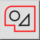
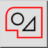
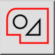
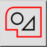

Выделить контур (отменить выделение)
Панель инструментов / Иконка:
 

Меню: Выделение > Выделить контур (отменить выделение)
Горячая клавиша: T, C
Команды: selectcontour | tc
Это автоматический перевод.
Панель инструментов / Иконка:
 

Меню: Выделение > Выделить контур (отменить выделение)
Горячая клавиша: T, C
Команды: selectcontour | tc
Selects or deselects entities that are connected to each other and form a contour (closed or open).